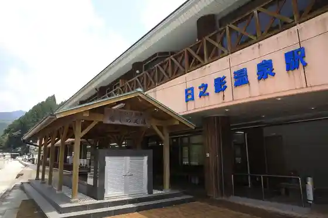
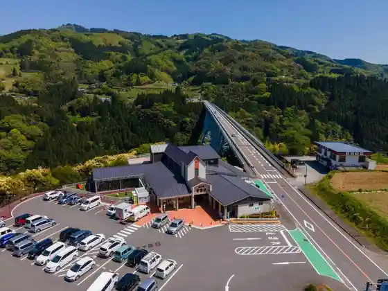
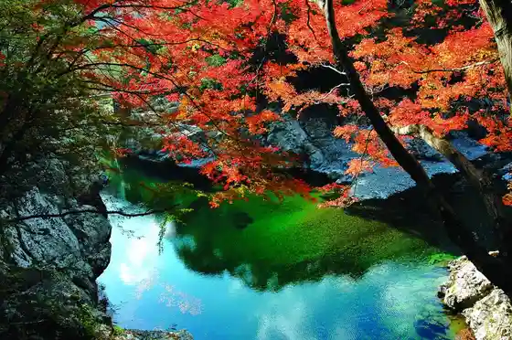
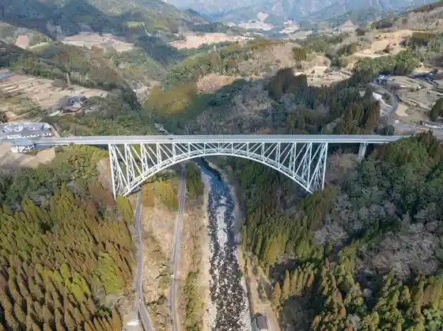

Hinokage Onsen Eki
Hinokage, Miyazaki · 0982-87-2690 · Official / source link

Roadside Station Seiun Hashi
Hinokage, Miyazaki · 0982-87-2491 · Official / source link

Mitate Gorge
Hinokage, Miyazaki · 0982-78-1021 · Official / source link

Seiun Hashi
Hinokage, Miyazaki · 0982-78-1021 · Official / source link

Kyu Daisan Gogasegawa Kyoryo
Hinokage, Miyazaki · 0982-78-1021 · Official / source link
Hachinohe Kannon Taki
Hinokage, Miyazaki · 0982-78-1021 · Official / source link
Tensho Bridge
Hinokage, Miyazaki · 0982-78-1021 · Official / source link
Take Saiku Museum
Hinokage, Miyazaki · 0982-78-4449 · Official / source link
Hinokage Kyanpu Village
Hinokage, Miyazaki · 0982-87-2820 · Official / source link
Ishigaki no Village Togawa
Hinokage, Miyazaki · 0982-78-1021 · Official / source link
Ryu Tenkyo
Hinokage, Miyazaki · 0982-78-1021 · Official / source link
Kyu Tsuna no Segawa Kyoryo
Hinokage, Miyazaki · 0982-78-1021 · Official / source link
Shikagawa Chiku Koryu Center Tsurigane (Gym)
Hinokage, Miyazaki · 0982-48-0160 · Official / source link
Shikagawa Chiku Koryu Center Tsurigane (Sakka Ba)
Hinokage, Miyazaki · 0982-48-0160 · Official / source link
Tan Jo Gaku
Hinokage, Miyazaki · 0982-78-1021 · Official / source link
Eikoku Kan
Hinokage, Miyazaki · 0982-89-1220 · Official / source link